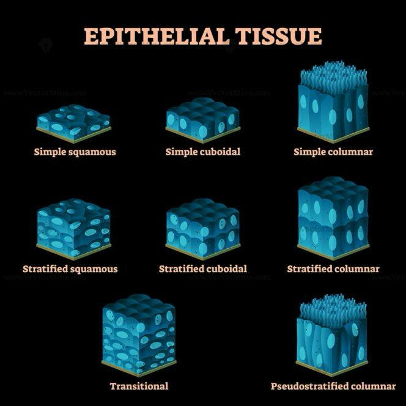
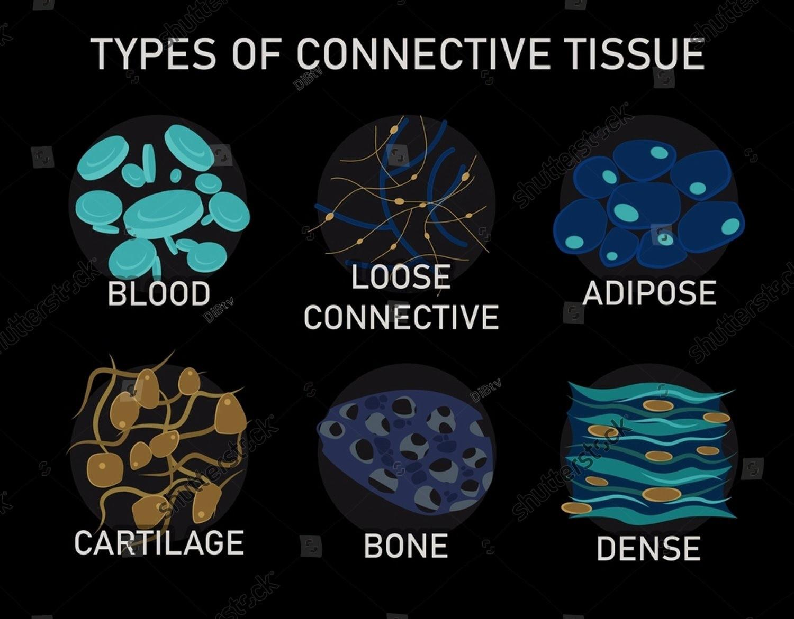
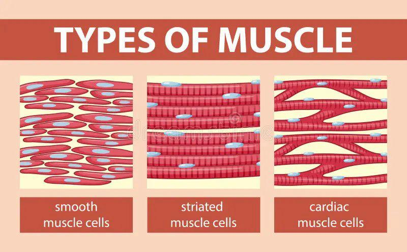
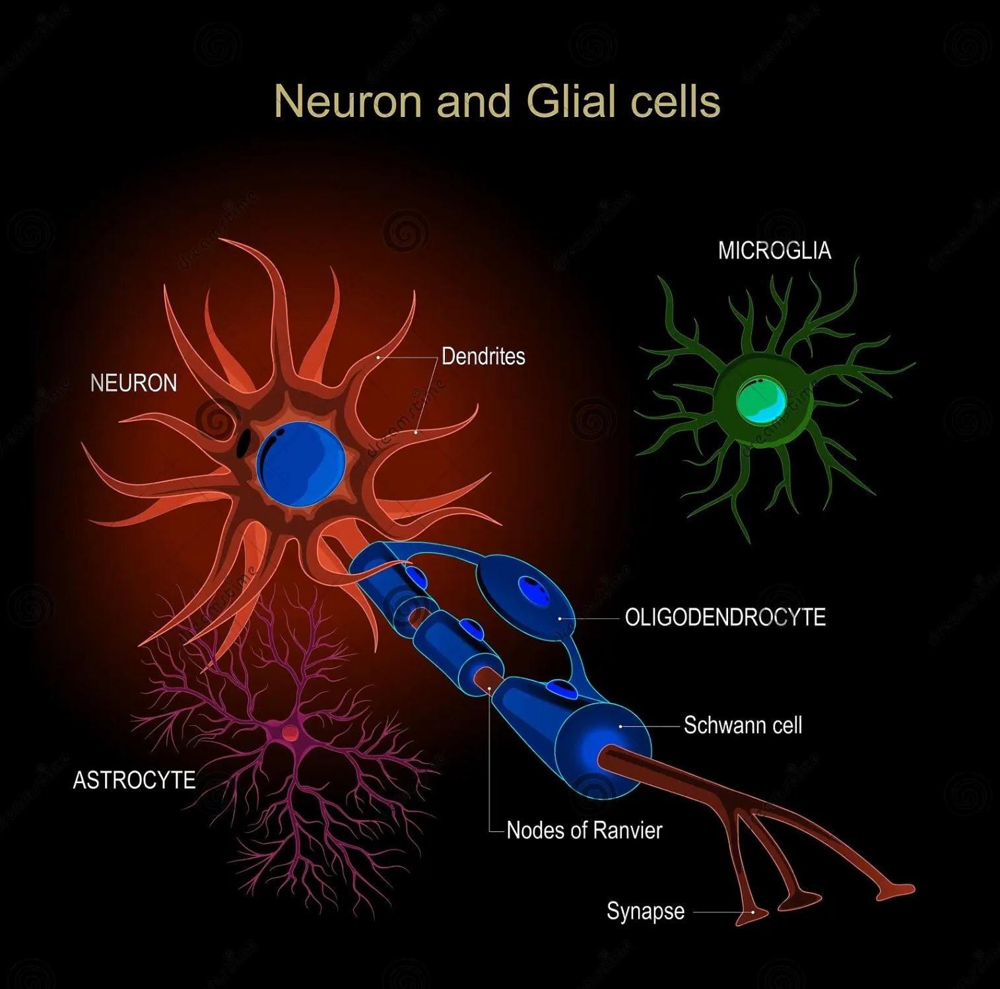

Each organ is made out of tissues regarding its structure and functions, so that these tissues satisfy all its needs. There are four main types of tissues: epithelial, connective, muscle and nervous.
Epithelial Tissue
- It covers the animal’s body, but it also lines organs and cavities within the body.
- Its main roles are to protect the organism from pathogens and mechanical injuries, to absorb and secrete certain substances and to avoid fluid loss.
- They can be made up of one (simple epithelium) or multiple cell stratifications (stratified epithelium), depending on their location and function, and they are sat on a fine basal membrane. Therefore, we have cuboidal epithelium, simple squamous epithelium, stratified squamous epithelium, simple columnar epithelium and pseudostratified columnar epithelium. They do not contain blood vessels.
- Cuboidal epithelium - it has dice (cubical) shaped cells, specialized for secretion. We can find them in the kidneys, but also in glands such as the salivary glands and the thyroid.
- Simple squamous epithelium - made out of platelike cells, and is important in diffusion, being very thin. Therefore, we find this type of tissue in blood vessels and lungs (important in gaseous exchanges).
- Stratified squamous epithelium - multilayered tissue that regenerates quickly: new cells, being formed at the base, push off the cells at the top of the tissue. It is found on surfaces subject to abrasion, such as the skin, the linings of the mouth, anus, and vagina.
- Simple columnar epithelium - found in areas important in secretion and/or absorption, as for example the epithelium that lines the intestines (absorbs nutrients, secretes digestive juices).
- Pseudostratified columnar epithelium - made out of a single layer of cells with their nuclei placed at different heights, giving the impression that it is pluristratified. This tissue with ciliated cells can be found in the mucous membrane of some parts of the respiratory tracts (for example, in the esophagus). The cilia move the mucus across the surface.
- Polarity of epithelia: all epithelia have two different sides: the apical side that faces the cavity or the outside of an organ, that often presents specialized structures as the microvilli in the small intestines (for absorption), and opposite the apical side we have the basal side.

Connective Tissue
- It is made out of distanced, scattered cells in an extracellular matrix that contains fibers in a liquid, jellylike or solid foundation.
- Its main role is to hold tissues and organs together.
- There are two types of cells in connective tissue: macrophages that engulf foreign particles through phagocytosis and fibroblasts which secrete fiber proteins.
- There are three types of fibers in connective tissue: collagenous fibers for strength and flexibility, reticular fibers that join connective tissue to other tissues, and elastic fibers for elasticity.
- Depending on the consistency of the matrix’s foundation and the tissue’s role, connective tissue can be of a few types: blood, loose connective tissues, fibrous connective tissue, adipose tissue, cartilage and bone.
- Blood - liquid extracellular matrix called plasma, in which we have suspended cells: erythrocytes (red blood cells that carry oxygen and carbon dioxide), leucocytes (white blood cells important in immunity) and platelets (cells fragments with a role in blood clotting).
- Loose connective tissue - contains all three types of fibers. Its role is to bind epithelia to underlying tissues and hold organs in place. It is found in the skin and throughout the body.
- Fibrous connective tissue - most of its fibers are collagenous. It is found in tendons (attaching muscle to bone) and in ligaments (connecting bones in joints).
- Adipose tissue - specialized loose connective tissue that stores fat, and therefore has an important role in insulating the body (meaning that it maintains a constant temperature regardless of the outside environment) and storing fuel as fat molecules.
- Bone - it is a mineralized connective tissue. Osteoblasts (bone-forming cells) contain calcium, magnesium and phosphate ions, in a matrix of collagen. Bone is formed out of repeating units called osteons, containing concentric layers of mineralized matrix around a central canal that contains blood vessels and nerves.

Muscle Tissue
- It is made out of elongated cells that consist of filaments containing the proteins actin and myosin, which give the muscle the ability to contract.
- There are three types of muscle throughout the body: skeletal, smooth and cardiac.
- Skeletal muscle - it is responsible for voluntary contractions (body movements). It is attached to bones by tendons and it is made out of long cells called muscle fibers that have multiple nuclei due to the way they have formed, by fusion of multiple cells. The arrangement of contractile units called sarcomeres inside the cells give the fiber a striated look. It is important to understand that in adult mammals building muscle does not mean forming new muscle cells, but growing in size the ones already existent.
- Smooth muscle - it is responsible for involuntary contractions (such as the stomach contracting to mix the food it receives with its gastric juice or the contraction of blood vessels to move blood in the desired direction), therefore it is found in the walls of most internal organs and blood vessels. It lacks striation.
- Cardiac muscle - it is found in the contractile wall of the heart. It is striated and has many similar characteristics to skeletal muscle, The difference between the two is that the cells of the cardiac muscle are connected through intercalated discs that have an important role in sending signals all throughout the heart and synchronizing contraction.

Nervous tissue
- Its main role is to receive, process and transmit information.
- It is made out of two types of cells: neurons (nerve cells) and glial cells.
- Neurons - they represent the basic units of the nervous systems. It is made up of the cell body (which contains the nucleus) and two types of extensions: axons (through which neurons transmit impulses to other neurons/other cells) and dendrites (through which neurons receive impulses from other neurons).
- Glial cells - their role is to support neurons, by nourishing and insulating them, replenish neurons and also modulate their functions.

Written by Bianca Buzas